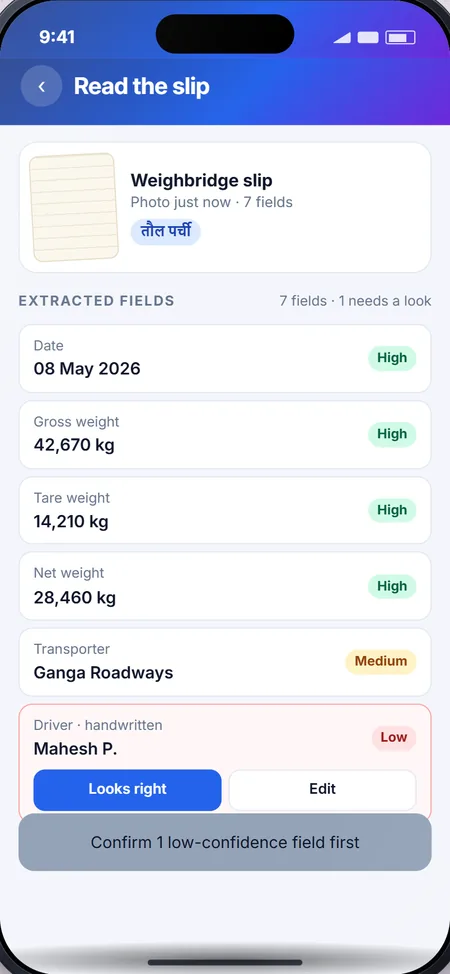
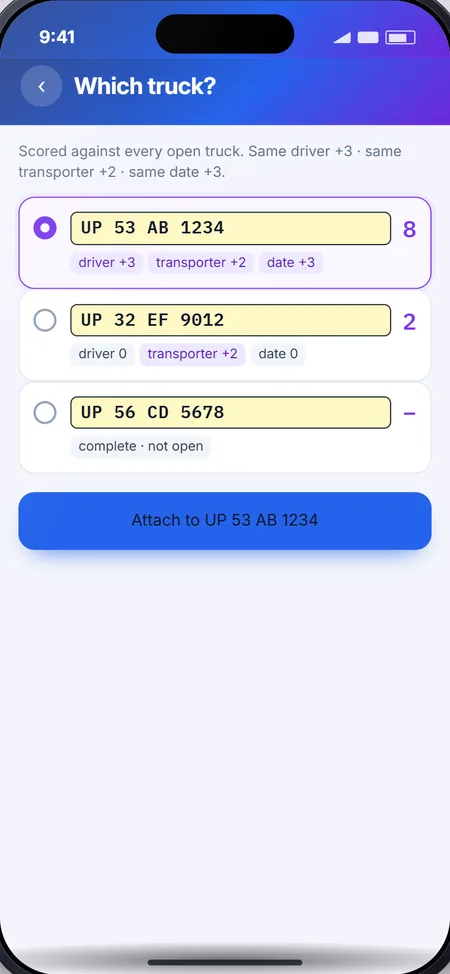

Case study · Document app · Android and web
Sri Hari Docs
Truck paperwork that files itself, in Hindi and English.
Open the live demo Start a project like this
- Type
- Document app for an agri-trading company
- Platform
- Android app and installable web app
- Built with
- React, Capacitor, Firebase
- Status
- Delivered, May 2026
Inside the product. Real screens from the working demo.

Every open truck
The yard at a glance: each open truck and how many of its seven papers are in.

Fields read, with confidence
Printed weights read high. A handwritten name in fading ink reads low, so staff know what to check.

The right truck, with reasons
Each open truck is scored against the slip: same driver +3, same transporter +2, same date +3.
The problem
Trucks arrive at the yard with a bundle of paper slips. A weighbridge slip went to one desk and a gate pass to another, so finding every paper for one truck meant asking several people.
The person receiving the truck has a phone in one hand and no time for a form with twelve fields.
What we built
The app has one main action: point the camera at the paper and press once. It works out which of the company’s seven document types it is, reads the fields, and attaches the document to the right truck.
Decisions that matter
- Seven document types, detected before the fields are read.
- Every field carries a confidence level. The app never pretends to know a value it half read.
- Matching by score, not by a long dropdown. Staff can still tap a different truck.
- A paper photographed twice waits in a review queue for a person to decide.
- Works in Hindi and English.
About the demo
The demo uses a sample yard with fictional trucks, drivers and transporters. Client data never appears on this site.